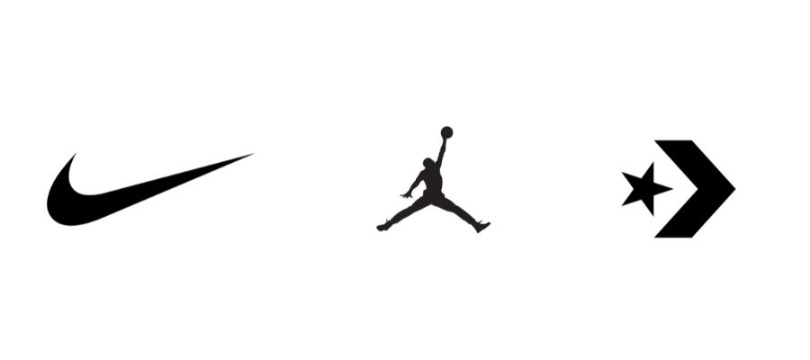

La nascita di
Nike
Phil Knight, uno studente della facoltà di Economia dell'Oregon University, si accorse che negli anni '60 c'era il boom delle scarpe d'atletica. Così decise di parlarne con il suo allenatore, Bill Bowerman, e insieme, il 25 Gennaio 1964, fondarono la Blue Ribbon Sports, società che commercializzava negli USA le calzature sportive prodotte dalla giapponese Onitsuka Tiger. Il successo fu così grande che i due decisero di investire nella creazione di un loro marchio. Quel marchio è Nike, che vide la luce il 30 Maggio 1971 a Beaverton, Oregon.
Nike divenne famosa per il proprio marchio e logo. Il nome deriva dalla dea della mitologia greca νίκη(Nike), spesso raffigurata è quello come una donna alata trionfante, da cui deriva l'appellativo di Vittoria Alata. L'iconico logo, noto anche come “Swoosh”, richiama una delle ali della Dea. Il logo fu creato da una studentessa del corso di grafica della Portland State University, Carolyn Davidson, che lavorò al progetto per due dollari l'ora e cedette il logo per soli 35$. In seguito, Davidson ricevette da Knight numerosi riconoscimenti e molte azioni dell'azienda per aver creato un simbolo dal valore inestimabile per lo sport e la moda.
Nike non ebbe successo solo grazie al suo marchio, ma anche grazie alla sua prima sponsorizzazione nel 1978 con il tennista John McEnroe, che contribuì alla sua fama internazionale.
L'azienda iniziò ad espandersi sempre di più, anche fuori dagli Stati Uniti, e nel 1979 brevettò il sistema di ammortizzazione noto come Nike-Air, tecnologia che in seguito venne impiegata nell'intera produzione di calzature e che portò la società, già nel 1979, a coprire il 50% nel settore delle scarpe da corsa, con un fatturato di oltre 150 milioni di dollari.
L'anno successivo Nike viene quotata in borsa con 2 milioni di azioni ordinarie offerte al pubblico e continuò a crescere, non solo economicamente, ma anche grazie alle sponsorizzazioni con Carl Lewis e Joan Benoit, e al lancio nel 1985 delle Air Jordan, divenute icona dell'NBA a livello mondiale. Nel 1988 Nike superò il miliardo di ricavi e inaugurò la campagna pubblicitaria "Just Do It", che ancora oggi rimane lo slogan dell'azienda.
Negli anni '90 Nike consolidò il proprio status di maggior produttore di abbigliamento sportivo negli Stati Uniti e, dopo Jordan, contava tra i proprii testimonial anche Agassi e altri atleti in tantissime discipline, oltre a interi club sportivi e persino la nazionale di calcio brasiliana con Ronaldo.
Dopo il 2000 la società è affermò anche nello streetwear non legato agli sport tradizionali, lo dimostrano le Nike Sb, le Nike Air Force One di Nelly del 2002 e le Air Yeezy I e II, realizzate in collaborazione con Kanye West del 2009.
Nel 2016 Nike ha lanciato le HyperAdapt 1.0, scarpe con autoallacciatura.
L'azienda incentiva anche l'attività fisica e il jopping tramite diverse app e programmi dedicati, oltre che attraverso la collaborazione con Apple per gli Apple Watch Nike +.
Oggi Nike è uno dei marchi più importanti del mondo, presente non solo nello sport, ma anche nella moda, nella musica e nella tecnologia. Genera un fatturato di oltre 30 miliardi di dollari, e tutto questo è stato possibile grazie all'intuizione del giovane Knight e del suo allenatore Bowerman, che probabilmente non immaginavano cosa sarebbe diventata Nike quando si sedettero a un tavolo dicendosi: “Just Do It”.